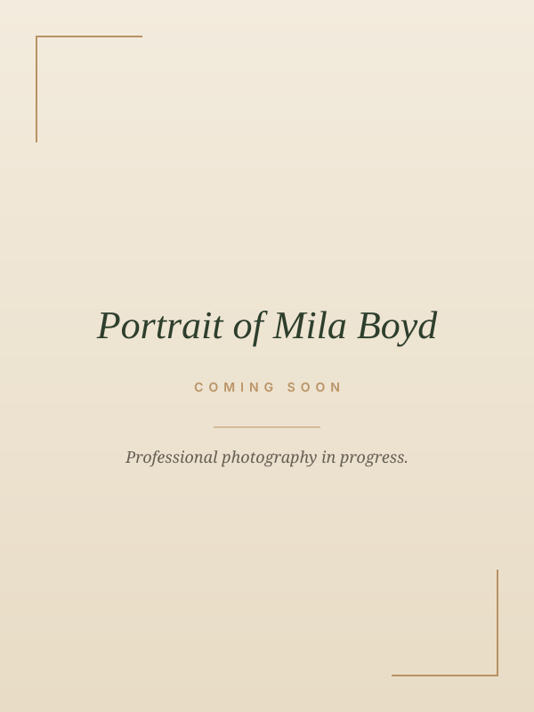

Interior + Flooring
Premium kitchen, bath, and remodel design. Material, light, and feel chosen with a designer's eye and ten years of field experience.
I work across kitchen and bath, flooring, interior, UX/UI, and service design. The studio brings the same disciplined eye to a remodel as to a product.
Senior Kitchen & Bath Designer · Flooring and Interior Design Specialist · UX/UI Designer · Service Design Student · Creative Consultant · Business Owner

Kitchen, bath, flooring, or a full home remodel. Calm material decisions made with a designer's eye and ten plus years of field experience.
See the Service → For Founders & TeamsProduct design through research, design systems, and shipped interface work. For founders and small studios who want clarity and a system that lasts.
See the Service → For Hiring ManagersSelected case studies across interior, UX/UI, brand, and service design. Real briefs, real outcomes, and the decisions written down.
See the Work → For Founders Chasing an OpportunityBusiness-development support: verified market research, a working pipeline, government and export resource navigation, recruiting coordination, and investor-ready documents.
See Consulting → For Everyone ElseSend a short inquiry through the form. I read every one personally and write back within two business days.
Book a Call →I design with the slow eye of someone who started on the floor. Measuring rooms, choosing materials, sitting with people as they made the most important decision of their year. That patience is now my UX.
Premium kitchen, bath, and remodel design. Material, light, and feel chosen with a designer's eye and ten years of field experience.
Product design that respects the user, the business, and the small decisions that compound. Research, systems, and shipped work.
Identity systems, type, color, and layout that read premium on every surface. Built to scale without losing the feeling.
Clarity on offers, pricing, and positioning for founders who want a brand that lasts. Direct, honest, structured.
A real call, a few honest questions. The brief, the audience, the constraints. The feeling the work should leave behind.
Palette, type, structure, voice. The rules the work will follow. Approved together before a single screen is built.
Calm, careful sessions. Weekly check ins. Decisions written down so nothing gets lost in translation.
Final files, a small kit, and a clean hand off. Light support afterward so the work keeps its feeling.
Active senior role at Floor & Decor. Designing remodels at scale for residential clients.
Ten plus years inside flooring showrooms, on job sites, and across high value remodels and new construction.
Active Pierce College coursework in UX/UI and service design, paired with a live studio practice.
National recognition reserved for top performing community college students.
Conferred from Pierce College, June 17, 2022. The academic foundation under the studio's practice.
A multi year academic path bridging design, business, and technology disciplines.
Naturally talented and hardworking. A methodical creative process and incredibly astute attention to detail. The most well rounded design student I have worked with.
Min K. Pak, M.F.A. · Pierce College, Digital DesignHard working, self motivated, and eager to learn. Great business acumen and follow through. Creative, thoughtful, and thorough.
Taryn Givenchy, M.S. · Associate Professor, Business and Digital DesignWhether you're remodeling a kitchen or shipping a product, the principles are the same. An honest brief, a clear next step, and a calm path forward.
Book a Call